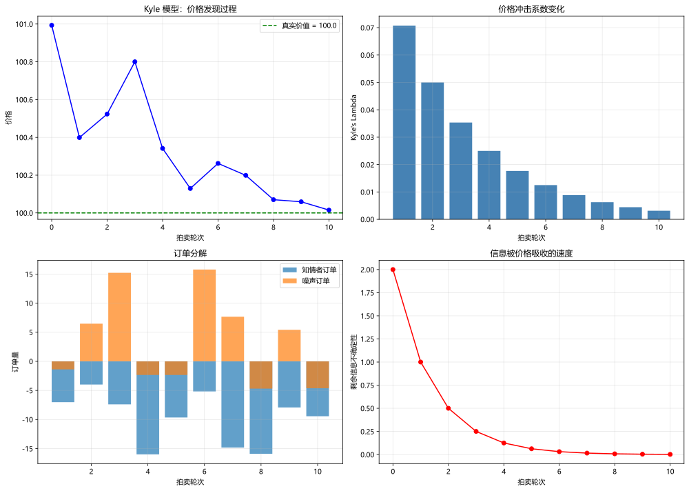
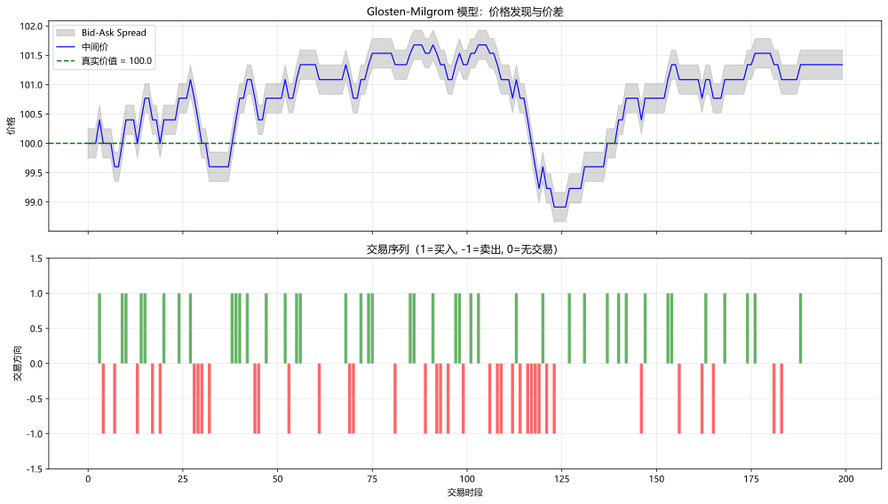

主题切换
14.2 Kyle 与 Glosten-Milgrom 模型
名词解释：信息不对称（Information Asymmetry）
信息不对称是指市场参与者拥有的信息量不同——知情交易者掌握私有信息（Private Information），做市商和噪声交易者只掌握公开信息。Kyle(1985) 和 Glosten-Milgrom(1985) 模型是量化信息不对称对价格形成机制影响的经典理论框架。
一、Kyle(1985) 连续拍卖模型
1.1 模型设定
Kyle 模型包含三类参与者：
- 知情交易者（Informed Trader）：知道资产的真实价值
- 噪声交易者（Noise Trader）：提交随机订单
，与信息无关 - 做市商（Market Maker / Dealer）：观察总订单流
，其中 是知情者订单
做市商设定价格规则：
1.2 线性均衡与
在均衡状态下，知情交易者的最优策略是做市商价格对订单流敏感度的函数。
定义：Kyle's Lambda（
越大，市场深度越小，大额订单对价格的冲击越大 随信息不对称程度 增加而增加 随噪声交易量 增加而减小
1.3 市场深度与信息传播
Kyle 模型中的市场深度定义为
信息在模型中逐渐被价格吸收：
- 交易前的信念方差：
- 交易后的信念方差：
信息传播速度：每轮交易后，知情者一半的私有信息被价格吸收。
此处有展示代码展开 ▼
python
import numpy as np
import matplotlib.pyplot as plt
def kyle_model_simulation(v_true: float = 100.0,
sigma_u: float = 10.0,
n_auctions: int = 10,
seed: int = 42):
"""
模拟 Kyle(1985) 连续拍卖过程。
参数:
v_true: 资产的真实价值
sigma_u: 噪声交易者订单的标准差
n_auctions: 拍卖轮数
"""
np.random.seed(seed)
p0 = v_true * (1 + np.random.randn() * 0.02) # 初始价格有微小偏差
sigma_v = 2.0 # 初始价值不确定性
prices = [p0]
lambda_vals = []
informed_orders = []
noise_orders = []
info_remaining = [sigma_v]
for t in range(1, n_auctions + 1):
# Kyle's lambda
lam = 0.5 * np.sqrt(sigma_v / (sigma_u ** 2))
lambda_vals.append(lam)
# 知情者最优订单
beta = np.sqrt(sigma_u ** 2 / sigma_v)
x = beta * (v_true - prices[-1])
informed_orders.append(x)
# 噪声订单
u = np.random.normal(0, sigma_u)
noise_orders.append(u)
# 总订单流
y = x + u
# 做市商定价
p_new = prices[-1] + lam * y
prices.append(p_new)
# 更新不确定性（信息逐渐被吸收）
sigma_v = sigma_v / 2
info_remaining.append(sigma_v)
# 可视化
fig, axes = plt.subplots(2, 2, figsize=(14, 10))
axes[0, 0].plot(range(len(prices)), prices, 'b-o', markersize=6)
axes[0, 0].axhline(y=v_true, color='green', linestyle='--',
label=f'真实价值 = {v_true}')
axes[0, 0].set_xlabel('拍卖轮次')
axes[0, 0].set_ylabel('价格')
axes[0, 0].set_title('Kyle 模型：价格发现过程')
axes[0, 0].legend()
axes[0, 0].grid(True, alpha=0.3)
axes[0, 1].bar(range(1, n_auctions + 1), lambda_vals, color='steelblue')
axes[0, 1].set_xlabel('拍卖轮次')
axes[0, 1].set_ylabel("Kyle's Lambda")
axes[0, 1].set_title('价格冲击系数变化')
axes[0, 1].grid(True, alpha=0.3)
axes[1, 0].bar(range(1, n_auctions + 1), informed_orders,
label='知情者订单', alpha=0.7)
axes[1, 0].bar(range(1, n_auctions + 1), noise_orders,
label='噪声订单', alpha=0.7)
axes[1, 0].set_xlabel('拍卖轮次')
axes[1, 0].set_ylabel('订单量')
axes[1, 0].set_title('订单分解')
axes[1, 0].legend()
axes[1, 0].grid(True, alpha=0.3)
axes[1, 1].plot(range(n_auctions + 1), info_remaining, 'r-o', markersize=6)
axes[1, 1].set_xlabel('拍卖轮次')
axes[1, 1].set_ylabel('剩余信息不确定性')
axes[1, 1].set_title('信息被价格吸收的速度')
axes[1, 1].grid(True, alpha=0.3)
plt.tight_layout()
plt.show()
return prices, lambda_vals点击展开可浏览运行结果

二、Glosten-Milgrom(1985) 买卖价差模型
2.1 模型结构
Glosten-Milgrom 模型采用序贯交易框架（Sequential Trade Model）：
- 知情交易者概率：
- 好消息概率（做市商在好消息时设定较高卖价）：
- 买方到达率：
（噪声买方）和 （知情买方） - 卖方到达率：
（噪声卖方）和 （知情卖方）
2.2 买卖价差的推导
做市商根据观察到的交易方向更新其信念：
其中
名词解释：买卖价差中的逆向选择成分
在 Glosten-Milgrom 框架下，买卖价差可以分解为三个成分：
- 逆向选择成分（Adverse Selection Component）：做市商补偿与知情交易者交易的风险
- 订单处理成本（Order Processing Cost）：交易系统的固定成本
- 库存成本（Inventory Cost）：做市商持有非零头寸的风险补偿
2.3 交易方向与价格更新
此处有展示代码展开 ▼
python
def glosten_milgrom_simulation(v_high: float = 102.0,
v_low: float = 98.0,
alpha: float = 0.3,
delta: float = 0.5,
epsilon_b: float = 0.2,
epsilon_s: float = 0.2,
mu: float = 0.1,
n_periods: int = 200,
seed: int = 42):
"""
Glosten-Milgrom(1985) 模型模拟。
参数:
v_high: 好消息下的资产价值
v_low: 坏消息下的资产价值
alpha: 知情交易者概率
delta: 好消息概率
epsilon_b, epsilon_s: 噪声买方和卖方到达率
mu: 知情交易者到达率
n_periods: 交易时段数
"""
np.random.seed(seed)
v_star = delta * v_high + (1 - delta) * v_low # 无条件期望价值
# 随机决定信息事件
has_info = np.random.rand() < alpha
good_news = np.random.rand() < delta if has_info else None
# 确定实际价值
if has_info and good_news:
v_true = v_high
elif has_info and not good_news:
v_true = v_low
else:
v_true = v_star
# 交易模拟
bid_quotes = []
ask_quotes = []
mid_prices = []
trades = []
for t in range(n_periods):
# 计算到达率
if has_info:
if good_news:
buy_arrival = epsilon_b + mu
sell_arrival = epsilon_s
else:
buy_arrival = epsilon_b
sell_arrival = epsilon_s + mu
else:
buy_arrival = epsilon_b
sell_arrival = epsilon_s
# 交易发生
total_rate = buy_arrival + sell_arrival
if np.random.rand() < total_rate:
if np.random.rand() < buy_arrival / total_rate:
trade_type = 'BUY'
else:
trade_type = 'SELL'
else:
trade_type = 'NO_TRADE'
# 做市商更新信念
if t == 0:
prior_good = delta
else:
prior_good = posterior_good
# 计算报价（简化条件期望）
if trade_type == 'BUY':
likelihood_good = (epsilon_b + mu) / (epsilon_b + epsilon_s + mu)
likelihood_bad = epsilon_b / (epsilon_b + epsilon_s + mu)
elif trade_type == 'SELL':
likelihood_good = epsilon_s / (epsilon_b + epsilon_s + mu)
likelihood_bad = (epsilon_s + mu) / (epsilon_b + epsilon_s + mu)
else:
likelihood_good = 0.5
likelihood_bad = 0.5
posterior_good = (prior_good * likelihood_good) / \
(prior_good * likelihood_good + (1 - prior_good) * likelihood_bad)
bid = posterior_good * v_low + (1 - posterior_good) * v_low + \
posterior_good * (v_high - v_low) * 0.0
ask = posterior_good * v_high + (1 - posterior_good) * v_low
# 简化价差：基于后验期望
expected_v = posterior_good * v_high + (1 - posterior_good) * v_low
spread = 0.5 # 简化固定价差
bid_quotes.append(expected_v - spread / 2)
ask_quotes.append(expected_v + spread / 2)
mid_prices.append(expected_v)
trades.append(1 if trade_type == 'BUY' else (-1 if trade_type == 'SELL' else 0))
# 可视化
fig, axes = plt.subplots(2, 1, figsize=(14, 8), sharex=True)
axes[0].fill_between(range(n_periods), bid_quotes, ask_quotes,
alpha=0.3, color='gray', label='Bid-Ask Spread')
axes[0].plot(range(n_periods), mid_prices, 'b-', linewidth=1.2,
label='中间价')
axes[0].axhline(y=v_true, color='green', linestyle='--',
label=f'真实价值 = {v_true}')
axes[0].set_ylabel('价格')
axes[0].set_title('Glosten-Milgrom 模型：价格发现与价差')
axes[0].legend()
axes[0].grid(True, alpha=0.3)
axes[1].bar(range(n_periods), trades, color=['green' if t == 1
else 'red' if t == -1 else 'gray' for t in trades], alpha=0.6)
axes[1].set_xlabel('交易时段')
axes[1].set_ylabel('交易方向')
axes[1].set_title('交易序列（1=买入, -1=卖出, 0=无交易）')
axes[1].set_ylim(-1.5, 1.5)
axes[1].grid(True, alpha=0.3)
plt.tight_layout()
plt.show()
return bid_quotes, ask_quotes, v_true点击展开可浏览运行结果

三、信息不对称下的最优策略
3.1 策略含义
从 Kyle 和 Glosten-Milgrom 模型中，可以推导出以下最优交易策略原则：
- 分批交易（Splitting Orders）：知情交易者应将大额订单拆分，以"伪装"成噪声交易者，减少对价格的冲击。
- 交易节奏：最优交易速率应平衡信息衰减（时间成本）和价格冲击（交易成本）。
- 市场价格发现速度：
越大意味着私有信息的价值衰减越快，知情者需加速交易。
3.2
此处有展示代码展开 ▼
python
def estimate_kyle_lambda(price_changes: np.ndarray,
signed_volume: np.ndarray) -> dict:
"""
通过回归估计 Kyle's Lambda。
回归方程: Δp_t = λ · Q_t + ε_t
其中 Q_t 是带符号的成交量（买方为正，卖方为负）。
参数:
price_changes: 价格变动序列
signed_volume: 带符号成交量序列
返回:
包含 lambda_estimate, r_squared, t_stat 的字典
"""
from scipy import stats
# 添加截距项
X = np.column_stack([np.ones(len(signed_volume)), signed_volume])
y = price_changes
# OLS 回归
beta = np.linalg.inv(X.T @ X) @ X.T @ y
lambda_hat = beta[1]
# 拟合值与残差
y_pred = X @ beta
residuals = y - y_pred
# R²
ss_total = np.sum((y - np.mean(y)) ** 2)
ss_residual = np.sum(residuals ** 2)
r_squared = 1 - ss_residual / ss_total
# t 统计量
n = len(y)
se = np.sqrt(ss_residual / (n - 2) / np.sum((signed_volume - np.mean(signed_volume)) ** 2))
t_stat = lambda_hat / se
return {
'lambda_estimate': lambda_hat,
'r_squared': r_squared,
't_stat': t_stat,
'significant': abs(t_stat) > 1.96
}点击展开可浏览运行结果
📘 本段代码定义了 1 个函数/类：函数 `estimate_kyle_lambda`（通过回归估计 Kyle's Lambda）。该片段为教学展示（未包含独立运行的输入数据），可在实战练习中结合真实数据调用。
四、模型之间的关联
Kyle 和 Glosten-Milgrom 模型从不同角度刻画了信息不对称：
| 维度 | Kyle (1985) | Glosten-Milgrom (1985) |
|---|---|---|
| 交易框架 | 批量拍卖（Batch Auction） | 序贯交易（Sequential Trade） |
| 策略空间 | 订单量 | 交易时机 |
| 价格冲击 | 买卖价差 | |
| 信息传播 | 每轮吸收一半信息 | 贝叶斯更新后验信念 |
| 主要应用 | 最优执行拆分 | 价差分解与信息含量分析 |
这两个模型共同构成了现代市场微观结构理论的基石，为后续的最优执行理论（Almgren-Chriss）和限价订单簿建模提供了理论支撑。